In this notebook we implement some of the ideas of the previous blog post “Introduction to Causal Inference with PPLs” using PathMC, a package for structural causal models with Bayesian estimation and interventional simulation via a concise Domain-Specific Language (DSL).
In the previous post we built a structural causal model for the Lalonde job-training dataset by hand in PyMC, and estimated the average treatment effect (ATE) with the do operator. Writing the model by hand shows you every prior, every link, and exactly where the intervention removes an edge. It is also repetitive. The treatment equation, the outcome equation, the data containers, and the do-surgery all follow mechanically from the DAG.
PathMC is a package from PyMC Labs that removes that boilerplate. You write the structural equations in a compact lavaan-inspired DSL, and PathMC compiles them into a generative PyMC model with a first-class do() operator on top. You give up some control over the model. In exchange you also get these tools without writing extra code: backdoor adjustment sets, DAG falsification, placebo refutation, marginal effects, and sensitivity analysis.
This notebook has one goal. We rebuild the same SCM, with the same priors, in PathMC, and check that the do-operator ATE reproduces the hand-rolled result. After that, we show how PathMC can help us answer questions about sensitivity and effect modification.
What this notebook assumes
We skip the data exploration. The previous post covers it, and nothing about it changes here. We do redraw the causal DAG below, because every claim in this notebook comes from that graph, and because the two-line model spec encodes it. The structure is short to state: seven pre-treatment covariates influence both program participation (treat) and 1978 earnings (re78), and treat influences re78. The covariates are therefore confounders, and conditioning on all of them satisfies the backdoor criterion.
Prepare Notebook
import arviz as az
import graphviz as gr
import matplotlib.pyplot as plt
import numpy as np
import pandas as pd
import pathmc
import xarray as xr
from matplotlib.patches import Rectangle
from pathmc import Prior
seed: int = 42
rng: np.random.Generator = np.random.default_rng(seed=seed)
HDI_PROB = 0.94
az.style.use("arviz-darkgrid")
az.rcParams["stats.ci_kind"] = "hdi"
az.rcParams["stats.ci_prob"] = HDI_PROB
plt.rcParams["figure.figsize"] = [10, 6]
plt.rcParams["figure.dpi"] = 100
plt.rcParams["figure.facecolor"] = "white"
%load_ext autoreload
%autoreload 2
%config InlineBackend.figure_format = "retina"Read and Preprocess Data
We reuse the preprocessing from the previous post without changes. Earnings are rescaled to thousands. A small constant keeps re78 strictly positive. The numerical features are divided by their standard deviation, which puts the priors on a common scale.
data_path = "https://raw.githubusercontent.com/rugg2/rugg2.github.io/master/lalonde.csv"
data = pd.read_csv(data_path)
data["re75"] = data["re75"] / 1_000
data["re78"] = data["re78"] / 1_000 + 1e-6
data = data.rename(columns={"educ": "education", "hispan": "hispanic"})
covariates_names = [
"education",
"age",
"re75",
"black",
"hispanic",
"married",
"nodegree",
]
df = data[["treat", *covariates_names, "re78"]].copy()
# Scale the numerical features by their standard deviation, matching
# StandardScaler(with_mean=False) from the previous post.
num_features = ["education", "age", "re75"]
for col in num_features:
df[col] = df[col] / df[col].std(ddof=0)
# The treatment node uses a Bernoulli family, so it needs a float column.
df["treat"] = df["treat"].astype(float)
n_obs = df.shape[0]
df.head()| treat | education | age | re75 | black | hispanic | married | nodegree | re78 | |
|---|---|---|---|---|---|---|---|---|---|
| 0 | 1.0 | 4.188588 | 3.747542 | 0.0 | 1 | 0 | 1 | 1 | 9.930047 |
| 1 | 1.0 | 3.427026 | 2.228268 | 0.0 | 0 | 1 | 0 | 1 | 3.595895 |
| 2 | 1.0 | 4.569368 | 3.038548 | 0.0 | 1 | 0 | 0 | 0 | 24.909451 |
| 3 | 1.0 | 4.188588 | 2.734693 | 0.0 | 1 | 0 | 0 | 1 | 7.506147 |
| 4 | 1.0 | 3.046246 | 3.342403 | 0.0 | 1 | 0 | 0 | 1 | 0.289791 |
PathMC works directly on this data frame. There are no design matrices to build and no data containers to declare. PathMC looks up every variable named in the model spec by column name.
We also keep the reference estimates from the previous post, so that we can compare our results against them.
naive_prediction = (
df.query("treat == 1")["re78"].mean() - df.query("treat == 0")["re78"].mean()
)
# https://rugg2.github.io/Lalonde%20dataset%20-%20Causal%20Inference.html
blog_prediction_ols = 1_548.24 / 1_000
blog_prediction_matching = 1_027.087 / 1_000
blog_prediction_matching_ci95 = [-705.131 / 1_000, 2_759.305 / 1_000]
print(f"Naive estimate: {naive_prediction: .3f}")
print(f"OLS estimate: {blog_prediction_ols: .3f}")
print(f"Matching estimate: {blog_prediction_matching: .3f}")Naive estimate: -0.635
OLS estimate: 1.548
Matching estimate: 1.027Causal DAG
Every result below comes from one directed acyclic graph, so we draw it before we write any model code. At the coarsest level the graph has three parts: the treatment, the outcome, and a block of pre-treatment covariates that influences both.
dag = gr.Digraph()
dag.node("treat", color="#2a2eec80", style="filled")
dag.node("re78", color="#fa7c1780", style="filled")
dag.node("covariates")
dag.edge("treat", "re78")
dag.edge("covariates", "treat")
dag.edge("covariates", "re78")
dag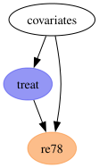
The covariates node is what makes this a causal inference problem rather than a regression problem. It sends an arrow into treat and an arrow into re78. This opens a backdoor path treat \(\leftarrow\) covariates \(\rightarrow\) re78. A comparison of treated and untreated earnings measures that path together with the causal one. This is why the naive estimate above is negative.
The next graph is the one we work with. It shows the seven covariates one by one, each with the same pair of arrows.
dag = gr.Digraph()
dag.node("treat", color="#2a2eec80", style="filled")
dag.node("re78", color="#fa7c1780", style="filled")
dag.edge("treat", "re78")
for covariate in covariates_names:
dag.edge(covariate, "treat")
dag.edge(covariate, "re78")
dag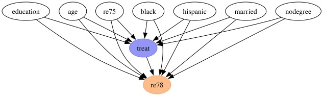
Two points about this graph matter later.
First, the graph has no arrows between the covariates themselves. This is a strong assumption, because education and nodegree carry overlapping information. We keep it because the previous post used this graph, and we test it directly in the identification section below.
Second, this graph is the entire content of the model spec. The next section writes it as two lines of formula. Then model.graph() renders PathMC’s version of the same graph, so we can check that the DSL parsed what we intended.
The Model as Formulas (Spec)
The whole model is two lines.
spec = f"""
treat ~ {" + ".join(covariates_names)}
re78 ~ b*treat + {" + ".join(f"c_{v}*{v}" for v in covariates_names)}
"""
print(spec)treat ~ education + age + re75 + black + hispanic + married + nodegree
re78 ~ b*treat + c_education*education + c_age*age + c_re75*re75 + c_black*black + c_hispanic*hispanic + c_married*married + c_nodegree*nodegreeEach line is a structural equation, and ~ reads as “is generated by”. The b* and c_education* prefixes are coefficient labels. They are optional, but a named coefficient can be referenced later in effects_summary() and in path queries. Labels do not change the parametrization. The outcome equation still compiles to a single coefficient vector, so labels and custom priors work together.
The seven covariates never appear on the left-hand side, which makes them exogenous roots. They have no equation, because we never intervene on them and never need their joint distribution.
Remark: If you prefer to start from a DAG rather than a formula,
pathmc.dag_to_specconverts a DOT string or anetworkx.DiGraphinto this format.
Now we compile the spec. The families argument turns the treatment equation into a logistic regression. PathMC pairs bernoulli with a logit link automatically.
model = pathmc.model(
spec,
data=df,
families={"treat": "bernoulli", "re78": "gaussian"},
)
model.graph()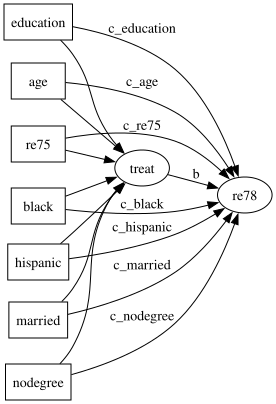
The equations() method renders the compiled structural equations. Use it to check that the DSL parsed the spec as you intended.
model.equations()\[ \begin{aligned} \beta_{treat} &\sim \text{Normal}(mu=0,\, sigma=10) \\ \beta_{re78} &\sim \text{Normal}(mu=0,\, sigma=10) \\ \sigma_{re78} &\sim \text{HalfNormal}(sigma=1) \\[6pt] \mu_{treat} &= \beta_{0,\,treat} \\ &\quad + \mathrm{education} \\ &\quad + \mathrm{age} \\ &\quad + \mathrm{re75} \\ &\quad + \mathrm{black} \\ &\quad + \mathrm{hispanic} \\ &\quad + \mathrm{married} \\ &\quad + \mathrm{nodegree} \\ \mathrm{treat} &\sim \text{Bernoulli}(\text{logit}^{-1}(\mu_{treat})) \\ \mu_{re78} &= \beta_{0,\,re78} \\ &\quad + b \cdot \mathrm{treat} \\ &\quad + c_{education} \cdot \mathrm{education} \\ &\quad + c_{age} \cdot \mathrm{age} \\ &\quad + c_{re75} \cdot \mathrm{re75} \\ &\quad + c_{black} \cdot \mathrm{black} \\ &\quad + c_{hispanic} \cdot \mathrm{hispanic} \\ &\quad + c_{married} \cdot \mathrm{married} \\ &\quad + c_{nodegree} \cdot \mathrm{nodegree} \\ \mathrm{re78} &\sim \text{Normal}(\mu_{re78},\, \sigma_{re78}) \end{aligned} \]
Priors
This notebook makes a like-for-like comparison, so the priors must match the previous post exactly. First we look at the priors PathMC chose on its own.
model.priors()\[ \begin{aligned} \beta_{treat} &\sim \text{Normal}(mu=0,\, sigma=10) \\ \beta_{re78} &\sim \text{Normal}(mu=0,\, sigma=10) \\ \sigma_{re78} &\sim \text{HalfNormal}(sigma=1) \end{aligned} \]
Before we override these, one detail of PathMC’s parametrization is easy to miss.
There is no separate intercept variable. PathMC puts the intercept into the coefficient vector as its first element. Each equation gets one vector beta_{outcome}, indexed by a coordinate that lists the intercept and then the predictors in order.
dict(model.pymc_model.coords){'treat_predictors': ('Intercept',
'education',
'age',
're75',
'black',
'hispanic',
'married',
'nodegree'),
're78_predictors': ('Intercept',
'treat',
'education',
'age',
're75',
'black',
'hispanic',
'married',
'nodegree')}To reproduce the previous post’s \(\text{Normal}(0, 10)\) intercept and \(\text{Normal}(0, 1)\) slopes, we pass a vectorized prior. Its scale is \(10\) in the first position and \(1\) everywhere else. We index against the ordering shown above.
n_treat_slopes = len(covariates_names)
n_re78_slopes = len(covariates_names) + 1 # covariates plus the treatment itself
priors = {
"beta_treat": Prior(
"Normal", mu=0, sigma=[10.0] + [1.0] * n_treat_slopes, dims="treat_predictors"
),
"beta_re78": Prior(
"Normal", mu=0, sigma=[10.0] + [1.0] * n_re78_slopes, dims="re78_predictors"
),
"sigma_re78": Prior("HalfNormal", sigma=10.0),
}
model = pathmc.model(
spec,
data=df,
families={"treat": "bernoulli", "re78": "gaussian"},
priors=priors,
)
model.priors()\[ \begin{aligned} \beta_{treat} &\sim \text{Normal}(mu=0,\, sigma=[10. 1. 1. 1. 1. 1. 1. 1.]) \\ \beta_{re78} &\sim \text{Normal}(mu=0,\, sigma=[10. 1. 1. 1. 1. 1. 1. 1. 1.]) \\ \sigma_{re78} &\sim \text{HalfNormal}(sigma=10.0) \end{aligned} \]
Prior Predictive Checks
Sampling from the prior tells us whether the model can produce data similar to what we observed.
sample_kwargs = {
"draws": 1_000,
"tune": 1_000,
"chains": 4,
"random_seed": seed,
}
prior_idata = model.sample_prior_predictive(
draws=sample_kwargs["draws"], random_seed=sample_kwargs["random_seed"]
)Sampling: [beta_re78, beta_treat, re78, sigma_re78, treat]Note that PathMC compiles every endogenous variable as a free random variable. The prior draws for re78 therefore go into the prior group, and the prior_predictive group stays empty.
prior_re78 = prior_idata["prior"]["re78"].to_numpy().flatten()
fig, ax = plt.subplots()
ax.hist(prior_re78, bins=300, density=True, color="C0", alpha=0.7, label="prior")
ax.hist(df["re78"], bins=50, density=True, color="black", alpha=0.5, label="observed")
ax.axvline(0, color="C3", linestyle="--", label="zero earnings")
ax.legend()
ax.set(xlabel="earnings (thousands)", ylabel="density", xlim=(-60, 60))
fig.suptitle("Prior Predictive Check (re78)", fontsize=18, fontweight="bold");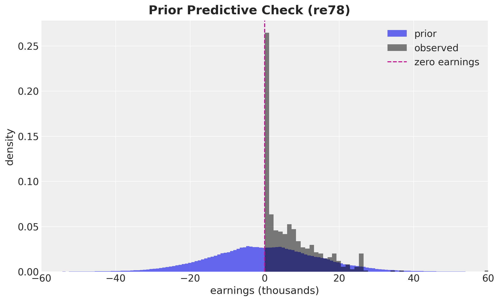
The prior is very wide. We measure how wide instead of reading it off the plot.
print(f"Prior P(re78 < 0) = {(prior_re78 < 0).mean():.3f}")
print(f"Observed P(re78 < 0) = {(df['re78'] < 0).mean():.3f}")
print(
"Prior 1% / 99% quantiles: "
f"{np.percentile(prior_re78, [1, 99]).round(1)} (thousands)"
)Prior P(re78 < 0) = 0.504
Observed P(re78 < 0) = 0.000
Prior 1% / 99% quantiles: [-37.3 37.7] (thousands)Half the prior mass is on negative earnings, against exactly zero in the data. The central \(98\%\) of the prior spans plus or minus \(37\) thousand dollars. Earnings cannot go below zero, so the prior is not only wide, it also has the wrong shape. The linear Gaussian model cannot express the constraint that earnings are non-negative.
The previous post had the same limitation, and it is the reason for the Gamma model there. We do not repeat that model here.
Identification
This section has no counterpart in the hand-rolled version. Before we fit anything, PathMC can read the DAG and tell us two things: whether the causal effect is identifiable, and what we need to condition on.
adjustment_sets = model.adjustment_sets(treatment="treat", outcome="re78")
print(f"Identifiable: {model.is_identifiable(treatment='treat', outcome='re78')}")
print(f"Valid backdoor adjustment sets: {adjustment_sets}")Identifiable: True
Valid backdoor adjustment sets: [{'married', 'black', 'education', 'nodegree', 'hispanic', 'age', 're75'}]The effect is identifiable, and the single valid adjustment set is all seven covariates. This is the backdoor criterion, and PathMC derives it from the graph.
We can also ask whether conditioning on that set opens any collider path. A collider path would add bias instead of removing it.
model.collider_warnings(
adjustment_vars=set(covariates_names), treatment="treat", outcome="re78"
)[]The list is empty, so conditioning on the seven covariates opens no collider path.
A DAG also makes falsifiable claims. It implies a specific list of conditional independences that should hold in the data. PathMC can enumerate them and test each one.
implied = model.implied_independences()
print(f"Number of implied conditional independences: {len(implied)}")
implied[:5]Number of implied conditional independences: 21
[age ⊥⊥ black,
age ⊥⊥ education,
age ⊥⊥ hispanic,
age ⊥⊥ married,
age ⊥⊥ nodegree]The list comes from the basis set of the graph. For each pair of variables with no edge between them, PathMC conditions on the union of their parents. It keeps the pair if that makes them d-separated. Our seven covariates are exogenous roots and have no parents, so every conditioning set here is empty. This leaves the \(\binom{7}{2} = 21\) covariate pairs, each one a claim of marginal independence. The treat \(\rightarrow\) re78 edge generates no statement, because adjacent nodes are never in the basis set.
Now we test the statements against the data.
implications = model.test_implications()
implicationsDAG Implication Tests (α = 0.05)
✗ 13 of 21 implied independences violated.
| Independence | Partial r | p-value | Pass |
|---|---|---|---|
| age ⊥⊥ black | -0.111 | 0.0060 | ✗ |
| age ⊥⊥ education | -0.126 | 0.0018 | ✗ |
| age ⊥⊥ hispanic | -0.053 | 0.1864 | ✓ |
| age ⊥⊥ married | 0.376 | 0.0000 | ✗ |
| age ⊥⊥ nodegree | -0.069 | 0.0866 | ✓ |
| age ⊥⊥ re75 | 0.140 | 0.0005 | ✗ |
| black ⊥⊥ education | -0.011 | 0.7946 | ✓ |
| black ⊥⊥ hispanic | -0.295 | 0.0000 | ✗ |
| black ⊥⊥ married | -0.317 | 0.0000 | ✗ |
| black ⊥⊥ nodegree | 0.109 | 0.0067 | ✗ |
| black ⊥⊥ re75 | -0.140 | 0.0005 | ✗ |
| education ⊥⊥ hispanic | -0.174 | 0.0000 | ✗ |
| education ⊥⊥ married | -0.095 | 0.0185 | ✗ |
| education ⊥⊥ nodegree | -0.701 | 0.0000 | ✗ |
| education ⊥⊥ re75 | 0.018 | 0.6508 | ✓ |
| hispanic ⊥⊥ married | 0.022 | 0.5941 | ✓ |
| hispanic ⊥⊥ nodegree | 0.101 | 0.0124 | ✗ |
| hispanic ⊥⊥ re75 | 0.062 | 0.1274 | ✓ |
| married ⊥⊥ nodegree | -0.032 | 0.4236 | ✓ |
| married ⊥⊥ re75 | 0.354 | 0.0000 | ✗ |
| nodegree ⊥⊥ re75 | -0.070 | 0.0813 | ✓ |
At first sight this number looks like a refutation of the model, so we need to be precise about what it counts.
For each statement \(X \perp\!\!\!\perp Y \mid Z\), test_implications() regresses \(X\) and \(Y\) on \(Z\) (plus an intercept) by least squares. It then correlates the two residual vectors and runs a two-sided t-test on that partial correlation. When \(Z\) is empty, as it is for all 21 statements here, the residualization step drops out. The test is then an ordinary Pearson correlation between the two raw columns. A p-value below \(\alpha = 0.05\) is recorded as a violation. The data show an association that the DAG says should not be there, which indicates a missing edge.
The test has three properties to keep in mind. It reads the observed data only and never the posterior, so it runs before any sampling. It measures linear dependence, so it does not detect a purely nonlinear relationship. It treats binary columns as numeric \(0/1\), which is a linear probability approximation rather than an exact test for them.
The violations attribute gives the failing rows, with the partial correlation and p-value behind each result.
implications.violations.round(3)| x | y | conditioning_set | partial_corr | p_value | n_obs | significant | |
|---|---|---|---|---|---|---|---|
| 0 | age | black | -0.111 | 0.006 | 614 | True | |
| 1 | age | education | -0.126 | 0.002 | 614 | True | |
| 3 | age | married | 0.376 | 0.000 | 614 | True | |
| 5 | age | re75 | 0.140 | 0.001 | 614 | True | |
| 7 | black | hispanic | -0.295 | 0.000 | 614 | True | |
| 8 | black | married | -0.317 | 0.000 | 614 | True | |
| 9 | black | nodegree | 0.109 | 0.007 | 614 | True | |
| 10 | black | re75 | -0.140 | 0.000 | 614 | True | |
| 11 | education | hispanic | -0.174 | 0.000 | 614 | True | |
| 12 | education | married | -0.095 | 0.018 | 614 | True | |
| 13 | education | nodegree | -0.701 | 0.000 | 614 | True | |
| 16 | hispanic | nodegree | 0.101 | 0.012 | 614 | True | |
| 19 | married | re75 | 0.354 | 0.000 | 614 | True |
The conditioning_set column is empty on every row, which confirms the reading above. Each failure is a claim that two covariates are marginally uncorrelated, and in the Lalonde data they are not. education and nodegree encode overlapping information. black and hispanic are mutually exclusive. None of these failures involves the treat \(\rightarrow\) re78 edge, which is the edge this notebook estimates.
To get a result for the DAG as a whole, rather than one implication at a time, we use falsify(). This is a permutation test, and we need to be precise about what it permutes.
What the permutation test permutes
falsify() does not shuffle the data. It shuffles the names of the nodes in the graph. It takes our DAG, leaves every arrow where it is, and assigns the nine variable names to the nine positions at random. The structure never changes: the same skeleton, the same number of arrows, and the same directions. Only the assignment of columns to structural positions changes.
Each relabeled graph implies its own list of conditional independences. PathMC tests that list against the same \(614\) rows and counts the failures. This count is the score of the relabeled graph. PathMC scores our DAG in the same way, on the same data. The test then compares our score against the scores of the relabeled graphs.
The test therefore asks one question: does naming the nodes the way we did explain the data better than naming them at random? If many random relabelings score as well as our graph, then our labeling adds nothing to the arrows alone.
One detail connects this to the section above. falsify() does not reuse the basis set from test_implications(). It tests the local Markov condition: for each node, is it independent of each of its non-descendants after conditioning on its parents? The two sets of statements overlap, but they are not the same. Their violation counts therefore do not have to agree.
falsification = model.falsify(n_permutations=200, random_seed=seed)
print(f"Local Markov statements tested: {falsification.n_lmc_tests}")
print(f"Violated by our DAG: {falsification.given_lmc_violations}")
print(
f"Violation fraction: {falsification.given_lmc_violation_fraction:.3f}"
)
print(f"p_lmc (beats the relabelings): {falsification.p_value_lmc:.3f}")
print(f"p_tPA (DAG is informative): {falsification.p_value_tpa:.3f}")
print(
f"""
Relabelings equivalent to ours:
{falsification.n_in_mec} of {falsification.n_permutations}
"""
)
falsificationLocal Markov statements tested: 42
Violated by our DAG: 26
Violation fraction: 0.619
p_lmc (beats the relabelings): 0.155
p_tPA (DAG is informative): 0.015
Relabelings equivalent to ours:
3 of 200DAG Falsification (α = 0.05)
✗ Rejected — the data falsify this DAG.
| Informative (falsifiable) | Yes |
| Permutations in Markov equivalence class | 3 / 200 (p = 0.015) |
| LMC violations (given DAG) | 26 / 42 |
| Beats permuted baseline | 84.5% (p = 0.155) |
Reading the two numbers
The result carries two p-values, and they answer different questions.
p_lmc is the share of relabeled graphs that fit the data at least as well as ours. A small value is good. It means few relabeled graphs match our fit. Here it is \(0.155\), so about one relabeled graph in six matches or beats our score. Our DAG scores better than the typical relabeled graph, but not by enough to be significant at the \(5\%\) level.
p_tPA is the share of relabeled graphs that are structurally indistinguishable from ours. PathMC computes it from the graph alone and never uses the data. A small value is good here for a different reason. It means our DAG makes claims that could have failed, so the test can detect a wrong labeling. A graph that every relabeling reproduces is untestable, not correct. Here it is \(0.015\), which is three relabeled graphs out of \(200\).
The result needs both conditions. PathMC reports falsified when p_lmc is above \(0.05\) (we did not beat the relabeled graphs) and p_tPA is below \(0.05\) (there was something to beat). Both conditions hold, so the DAG is falsified.
The raw count shows the same result: \(26\) of the \(42\) local Markov statements fail. This agrees with test_implications(), and for the same reason. Our spec claims an independence structure among the covariates that the data reject.
fig, ax = plt.subplots()
falsification.plot(ax=ax)
ax.set_title(
f"p_LMC = {falsification.p_value_lmc:.3f}, p_tPA = {falsification.p_value_tpa:.3f}",
fontsize=12,
)
fig.suptitle(
"Permutation Baseline for DAG Falsification", fontsize=18, fontweight="bold"
);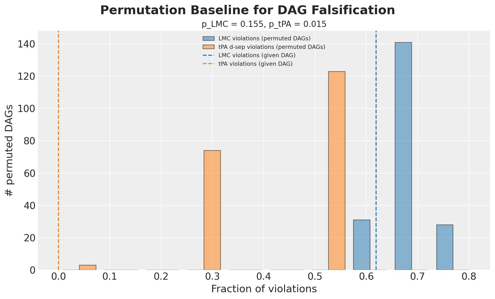
The blue histogram is the permutation baseline. It shows the violation fraction of the \(200\) relabeled graphs, which is the range of scores a graph of this shape produces by chance on this data. The dashed blue line is our DAG. p_lmc is the share of the blue distribution at or to the left of that line.
Our line is just below the tallest blue bar, so our DAG fits better than most relabeled graphs. Even so, \(31\) of the \(200\) relabeled graphs are at or to the left of it. That count divided by \(200\) gives the \(0.155\).
The orange histogram is the structural check, and it shows that the test has power here. Almost every relabeled graph is well away from zero, which means it implies d-separations our DAG does not have. Only three are at zero, in the short bar at the far left. Those three are the relabeled graphs equivalent to ours, and they make p_tPA small.
Choosing the number of permutations
Both p-values are shares counted over n_permutations relabeled graphs. They are therefore estimates, not constants, and a short run gives a noisy estimate. The result changes as we lengthen the run.
permutation_sweep = pd.DataFrame(
[
{
"n_permutations": result.n_permutations,
"p_lmc": result.p_value_lmc,
"p_tpa": result.p_value_tpa,
"falsified": result.falsified,
}
for result in (
model.falsify(n_permutations=n, random_seed=seed)
for n in (20, 50, 200, 1_000)
)
]
)
permutation_sweep.round(3)| n_permutations | p_lmc | p_tpa | falsified | |
|---|---|---|---|---|
| 0 | 20 | 0.000 | 0.000 | False |
| 1 | 50 | 0.220 | 0.000 | True |
| 2 | 200 | 0.155 | 0.015 | True |
| 3 | 1000 | 0.148 | 0.022 | True |
The short run gives the opposite answer. At \(20\) relabeled graphs this DAG returns not_rejected, which reads as a pass. From \(50\) upward the result is falsified, and p_lmc settles near \(0.15\).
The cause is the small count. Each p-value is a fraction with n_permutations in the denominator, so at \(20\) the only possible values are \(0\), \(0.05\), \(0.10\) and so on. The numerator is also a random count. A true share near \(0.15\) lands on zero by chance often enough to matter. The result changes at \(0.05\), so this noise changes the conclusion and not only the digits.
One run is not enough evidence. We repeat the comparison over several seeds.
stability_records = []
for n_permutations in (20, 500):
for stability_seed in range(25):
result = model.falsify(
n_permutations=n_permutations, random_seed=stability_seed
)
stability_records.append(
{
"n_permutations": n_permutations,
"p_lmc": result.p_value_lmc,
"falsified": result.falsified,
}
)
stability = (
pd.DataFrame(stability_records)
.groupby("n_permutations")
.agg(
share_falsified=("falsified", "mean"),
p_lmc_min=("p_lmc", "min"),
p_lmc_max=("p_lmc", "max"),
p_lmc_sd=("p_lmc", "std"),
)
)
stability.round(3)| share_falsified | p_lmc_min | p_lmc_max | p_lmc_sd | |
|---|---|---|---|---|
| n_permutations | ||||
| 20 | 0.36 | 0.050 | 0.35 | 0.083 |
| 500 | 1.00 | 0.142 | 0.21 | 0.016 |
Across \(25\) seeds the short run reports the DAG as falsified about a third of the time. Its p_lmc varies over a range wider than the value it estimates. The long run reports the DAG as falsified every time, and its p_lmc stays in a narrow band. The quantity being estimated is the same in both cases. Only the noise around it changes.
**PathMC's default is $20$ permutations.** The `n_permutations` argument defaults to `round(1 / significance_level)`, so `model.falsify()` with no arguments is the short run above. Pass a few hundred instead, and confirm a passing result with a second, longer run.What the falsified result means here
Three conclusions follow.
The DAG is a poor description of how the covariates relate to each other. This is the reading at \(200\) relabeled graphs or more. Age and marital status are correlated. education and nodegree encode overlapping information. Our spec says these pairs are independent, and the data disagree.
The result does not affect the ATE. Every violated statement is between two covariates, and all seven covariates are already in the adjustment set. The next section demonstrates this. It writes the missing edges into a second DAG and checks whether the adjustment set changes.
The short run fails in the reassuring direction. If we had used the default \(20\) permutations, we would have read not_rejected and recorded that the graph passed. A failure toward reassurance is the more dangerous one.
Effect of the falsified DAG on the ATE
The falsified result does not invalidate the ATE here. Every failure above concerns edges among the covariates. The backdoor criterion does not depend on those edges, because we condition on all seven covariates in any case.
We can check this directly. We write a DAG that states some of the covariate dependence explicitly, then ask whether identification changes.
dependent_covariates_spec = f"""
nodegree ~ education
married ~ age
re75 ~ black + education
treat ~ {" + ".join(covariates_names)}
re78 ~ treat + {" + ".join(covariates_names)}
"""
dependent_model = pathmc.model(
dependent_covariates_spec,
data=df,
families={"treat": "bernoulli", "re78": "gaussian"},
)
print(
"Identifiable: "
f"{dependent_model.is_identifiable(treatment='treat', outcome='re78')}"
)
print(
"Adjustment set: "
f"{dependent_model.adjustment_sets(treatment='treat', outcome='re78')}"
)Identifiable: True
Adjustment set: [{'married', 'black', 'education', 'nodegree', 'hispanic', 'age', 're75'}]Identification is unchanged, and the adjustment set is the same seven covariates. Adding the missing edges satisfies the falsification test without changing the estimand. This shows that those failures do not affect this causal question. A backdoor path of the form treat \(\leftarrow\) education \(\rightarrow\) nodegree \(\rightarrow\) re78 is already blocked, because both variables are in the conditioning set.
These tests cannot detect an unmeasured confounder. A variable that is absent from the data can never appear as a violated independence, so falsification testing will not find it. The sensitivity analysis at the end of the notebook addresses this case.
Model Fit
Identification is settled, so we fit the model. fit() forwards all arguments to pm.sample, so we pass the shared sample_kwargs dictionary directly.
idata = model.fit(**sample_kwargs)NUTS[nutpie]: [beta_re78, beta_treat, sigma_re78]
Output()Diagnostics
We now look at the posterior statistics of the model.
az.diagnose(idata)Divergences
No divergent transitions found.
E-BFMI
E-BFMI satisfactory for all chains.
ESS
Effective sample size satisfactory for all parameters.
R-hat
R-hat values satisfactory for all parameters.
Processing complete, no problems detected.
Falsevar_names = ["beta_re78", "beta_treat", "sigma_re78"]
az.summary(idata, var_names=var_names, ci_prob=HDI_PROB, ci_kind="hdi")| mean | sd | hdi94_lb | hdi94_ub | ess_bulk | ess_tail | r_hat | mcse_mean | mcse_sd | |
|---|---|---|---|---|---|---|---|---|---|
| beta_re78[Intercept] | -0.2 | 1.91 | -3.7 | 3.5 | 843 | 1327 | 1.00 | 0.066 | 0.046 |
| beta_re78[treat] | 0.55 | 0.58 | -0.56 | 1.7 | 5967 | 3371 | 1.00 | 0.0075 | 0.0052 |
| beta_re78[education] | 1.14 | 0.34 | 0.5 | 1.8 | 917 | 1424 | 1.00 | 0.011 | 0.0078 |
| beta_re78[age] | 0.51 | 0.285 | -0.0048 | 1.1 | 2263 | 2563 | 1.00 | 0.006 | 0.0044 |
| beta_re78[re75] | 1.531 | 0.292 | 0.98 | 2.1 | 7003 | 3099 | 1.00 | 0.0035 | 0.0026 |
| beta_re78[black] | -0.94 | 0.59 | -2 | 0.18 | 5754 | 3221 | 1.00 | 0.0078 | 0.0056 |
| beta_re78[hispanic] | 0.23 | 0.7 | -1.1 | 1.6 | 6715 | 2982 | 1.00 | 0.0086 | 0.0062 |
| beta_re78[married] | 0.78 | 0.58 | -0.33 | 1.9 | 4944 | 2778 | 1.00 | 0.0082 | 0.0057 |
| beta_re78[nodegree] | -0.13 | 0.62 | -1.3 | 1 | 1586 | 2160 | 1.00 | 0.016 | 0.011 |
| beta_treat[Intercept] | -4.17 | 0.93 | -5.9 | -2.5 | 693 | 1224 | 1.01 | 0.035 | 0.025 |
| beta_treat[education] | 0.35 | 0.158 | 0.056 | 0.65 | 767 | 1326 | 1.00 | 0.0057 | 0.0041 |
| beta_treat[age] | 0.074 | 0.13 | -0.18 | 0.32 | 1729 | 2145 | 1.00 | 0.0031 | 0.0022 |
| beta_treat[re75] | -0.048 | 0.122 | -0.28 | 0.18 | 6864 | 3187 | 1.00 | 0.0015 | 0.0011 |
| beta_treat[black] | 2.909 | 0.259 | 2.4 | 3.4 | 3349 | 2695 | 1.00 | 0.0045 | 0.0032 |
| beta_treat[hispanic] | 0.69 | 0.39 | -0.06 | 1.4 | 4310 | 2953 | 1.00 | 0.0059 | 0.0042 |
| beta_treat[married] | -0.868 | 0.263 | -1.4 | -0.38 | 5079 | 2822 | 1.00 | 0.0037 | 0.0026 |
| beta_treat[nodegree] | 0.7 | 0.3 | 0.14 | 1.3 | 1098 | 2103 | 1.00 | 0.0091 | 0.0064 |
| sigma_re78 | 7.096 | 0.199 | 6.7 | 7.5 | 9863 | 2715 | 1.00 | 0.002 | 0.0015 |
pc = az.plot_trace_dist(idata, var_names=var_names, figure_kwargs={"figsize": (12, 7)})
pc.viz["figure"].item().suptitle("Trace", fontsize=18, fontweight="bold");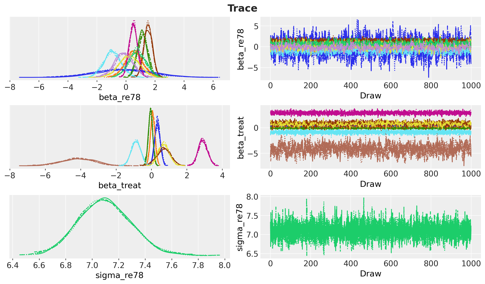
The model diagnostics look good.
The key check is the treatment coefficient. We compare it against the previous post.
coefficient_draws = idata["posterior"]["beta_re78"].sel(re78_predictors="treat")
comparison = pd.DataFrame(
{
"previous post (PyMC)": [0.552, 0.604, -0.547, 1.723],
"this notebook (PathMC)": [
coefficient_draws.mean().item(),
coefficient_draws.std().item(),
*az.hdi(coefficient_draws.to_numpy().flatten(), prob=HDI_PROB),
],
},
index=["mean", "sd", f"hdi_{HDI_PROB:.0%}_lower", f"hdi_{HDI_PROB:.0%}_upper"],
)
comparison.round(3)| previous post (PyMC) | this notebook (PathMC) | |
|---|---|---|
| mean | 0.552 | 0.552 |
| sd | 0.604 | 0.580 |
| hdi_94%_lower | -0.547 | -0.497 |
| hdi_94%_upper | 1.723 | 1.702 |
The two models agree to within Monte Carlo error. The translation to PathMC is correct.
ATE Estimation with the do Operator
In the previous post, computing the ATE by intervention took several steps. We had to build two intervened models with pm.do, sample the posterior predictive of each, subtract them, and average over observations. PathMC reduces this to one call.
ate = model.ate(outcome="re78", treatment="treat", values=(0.0, 1.0))
ate.summary(prob=HDI_PROB)| outcome | treatment | mean | sd | hdi_3% | hdi_97% | p(>0) | |
|---|---|---|---|---|---|---|---|
| estimand | |||||||
| ATE | re78 | treat | 0.55247 | 0.579864 | -0.496819 | 1.701976 | 0.827 |
The do() operator is the general tool, and ate() is a shorthand for it. We intervene twice and take the contrast.
do_1 = model.do(set={"treat": 1.0})
do_0 = model.do(set={"treat": 0.0})
ate_manual = (do_1 - do_0).mean("re78")
print(f"ATE via the coefficient : {coefficient_draws.mean().item():.16f}")
print(f"ATE via .ate() : {ate.mean():.16f}")
print(f"ATE via do(1) - do(0) : {ate_manual:.16f}")ATE via the coefficient : 0.5524696357268328
ATE via .ate() : 0.5524696357268328
ATE via do(1) - do(0) : 0.5524696357268328All three agree to machine precision. This is expected. With an identity link and no interaction terms, the g-computation average reduces exactly to the treatment coefficient. The equivalence stops holding when the model becomes non-linear, and that is when the do operator becomes necessary.
By default do(kind="mean") propagates through the deterministic means and averages over rows, which is g-computation. This is the same quantity the previous post computed by hand with .mean(dim="obs_idx").
We now compare the estimate against the reference values.
ate_draws = ate.draws()
ate_hdi = ate.hdi(prob=HDI_PROB)
fig, ax = plt.subplots(figsize=(12, 7))
ax.hist(ate_draws, bins=100, color="C0", alpha=0.8, density=True, label="ATE posterior")
ax.axvline(naive_prediction, color="C3", label="naive estimate")
ax.axvline(blog_prediction_ols, color="C2", label="OLS estimate")
ax.axvline(blog_prediction_matching, color="C1", label="matching estimate")
ax.axvline(
blog_prediction_matching_ci95[0],
color="C1",
linestyle="dashed",
label="matching estimate 95% confidence",
)
ax.axvline(blog_prediction_matching_ci95[1], color="C1", linestyle="dashed")
ax.axvline(0, color="black", linestyle="dotted", label="no effect")
ax.axvspan(ate_hdi[0], ate_hdi[1], color="C0", alpha=0.15, label=f"{HDI_PROB:.0%} HDI")
ax.legend(loc="upper center", bbox_to_anchor=(0.5, -0.1), ncol=3)
ax.set(xlabel="ATE estimate (thousands)", ylabel="density")
fig.suptitle("ATE Posterior vs Reference Estimates", fontsize=18, fontweight="bold");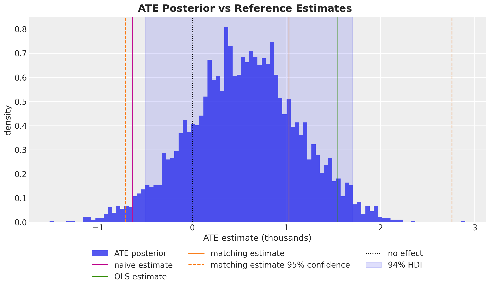
The posterior mean is between the naive estimate and the published OLS and matching estimates. The credible interval contains zero.
print(f"P(ATE > 0) = {ate.prob('> 0'):.3f}")P(ATE > 0) = 0.827This is the main result. The effect is positive in expectation, but the data do not rule out an effect of zero. The previous post reached the same conclusion, and two independent checks later in this notebook agree with it.
The forest plot below compares the coefficient method and the do-operator method side by side.
comparison_ds = xr.Dataset(
{
"ate_coefficient": coefficient_draws.drop_vars("re78_predictors"),
"ate_do_operator": ate.dataset["re78"],
}
)
pc = az.plot_forest(
xr.DataTree(dataset=comparison_ds, name="posterior"),
combined=True,
figure_kwargs={"figsize": (8, 3)},
)
pc.viz["figure"].item().suptitle(
"ATE Estimation Comparison", fontsize=18, fontweight="bold"
);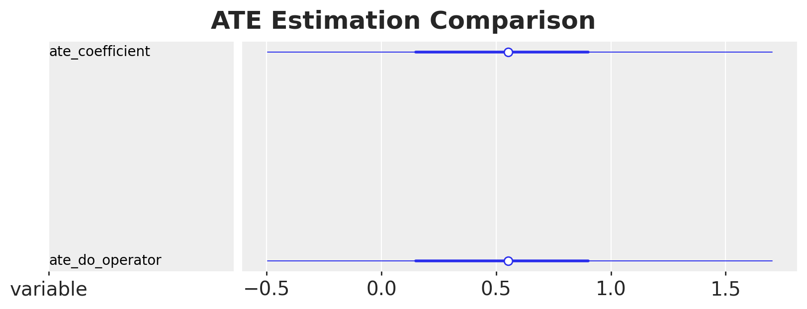
Structural Model or Regression Adjustment?
Our model does two things at once. It models how treatment was assigned (treat ~ covariates) and how earnings were generated (re78 ~ treat + covariates). The backdoor criterion requires only the second equation. If conditioning on the covariates blocks every confounding path, a plain outcome regression should recover the same ATE.
PathMC 0.3.0 added adjustment_model(). It reads the DAG, selects a minimal backdoor set, and builds the reduced single-equation model. The model is returned unfitted, so you call .fit() on it yourself.
default_prior_model = pathmc.model(
f"""
treat ~ {" + ".join(covariates_names)}
re78 ~ treat + {" + ".join(covariates_names)}
""",
data=df,
families={"treat": "bernoulli", "re78": "gaussian"},
)
adjustment_model = default_prior_model.adjustment_model("treat -> re78")
print(f"Reduced formula: {adjustment_model.formula}")
print(f"Adjustment set: {adjustment_model.adjustment_set}")Reduced formula: re78 ~ treat + age + black + education + hispanic + married + nodegree + re75
Adjustment set: frozenset({'nodegree', 'married', 're75', 'black', 'education', 'age', 'hispanic'})adjusted_model = pathmc.model(
f"re78 ~ b*treat + {' + '.join(f'c_{v}*{v}' for v in covariates_names)}",
data=df,
families={"re78": "gaussian"},
priors={
"beta_re78": Prior(
"Normal", mu=0, sigma=[10.0] + [1.0] * n_re78_slopes, dims="re78_predictors"
),
"sigma_re78": Prior("HalfNormal", sigma=10.0),
},
)
adjusted_idata = adjusted_model.fit(**sample_kwargs)
adjusted_ate = adjusted_model.ate(outcome="re78", treatment="treat", values=(0.0, 1.0))NUTS[nutpie]: [beta_re78, sigma_re78]
Output()pd.concat(
[
ate.summary(prob=HDI_PROB).assign(model="structural SCM"),
adjusted_ate.summary(prob=HDI_PROB).assign(model="regression adjustment"),
]
).set_index("model").round(3)| outcome | treatment | mean | sd | hdi_3% | hdi_97% | p(>0) | |
|---|---|---|---|---|---|---|---|
| model | |||||||
| structural SCM | re78 | treat | 0.552 | 0.580 | -0.497 | 1.702 | 0.827 |
| regression adjustment | re78 | treat | 0.537 | 0.598 | -0.592 | 1.640 | 0.809 |
The two estimates are almost identical, and this is not a coincidence. Modeling the treatment assignment mechanism does not improve a backdoor-adjusted ATE. The propensity equation contributes nothing to this estimand.
The full structural model still has uses that the reduced regression does not. It gives you the propensity model, which you can inspect or reuse. It lets you intervene on any node in the graph, not only the designated treatment. It also supports questions about mediation and path-specific effects. If you need only the ATE and your adjustment set is valid, the one-line regression is enough.
Marginal Effects and Contrasts
PathMC 0.3.0 also introduced an interpret layer modeled on marginaleffects. It provides predictions(), comparisons(), and slopes(), which share a common result type.
First we use the coefficient labels from the spec. effects_summary() reports the coefficients by name rather than by position.
model.effects_summary().round(3)| mean | sd | hdi_3% | hdi_97% | |
|---|---|---|---|---|
| name | ||||
| b | 0.552 | 0.580 | -0.497 | 1.702 |
| c_education | 1.143 | 0.339 | 0.524 | 1.793 |
| c_age | 0.513 | 0.285 | -0.010 | 1.048 |
| c_re75 | 1.531 | 0.292 | 0.963 | 2.058 |
| c_black | -0.937 | 0.589 | -2.008 | 0.186 |
| c_hispanic | 0.233 | 0.703 | -1.101 | 1.551 |
| c_married | 0.777 | 0.576 | -0.329 | 1.859 |
| c_nodegree | -0.134 | 0.624 | -1.382 | 0.981 |
The ATE is an additive contrast. A multiplicative contrast is sometimes more useful, especially for earnings.
for kind in ["diff", "ratio", "lift"]:
print(model.comparisons(outcome="re78", variable="treat", comparison=kind))ATE: treat→re78 mean=0.55 94% HDI=[-0.50, 1.70]
ratio: treat→re78 mean=1.10 94% HDI=[0.91, 1.33]
lift: treat→re78 mean=0.10 94% HDI=[-0.09, 0.33]The ratio says the program multiplies expected earnings by about \(1.1\), with an interval that includes \(1\). This is the same conclusion as the difference, on a scale that is easier to communicate.
slopes() gives marginal effects for continuous variables. Below we compute the effect of prior earnings on later earnings, first as a derivative and then as an elasticity.
print(model.slopes(outcome="re78", wrt="re75", slope="dydx"))
print(model.slopes(outcome="re78", wrt="re75", slope="eyex"))dydx: re75→re78 mean=1.53 94% HDI=[1.00, 2.10]
eyex: re75→re78 mean=0.12 94% HDI=[0.08, 0.15]The elasticity is a percentage. A \(1\%\) increase in 1975 earnings is associated with about a \(0.12\%\) increase in 1978 earnings.
datagrid() and predictions() together trace counterfactual outcomes across a covariate. We build a grid over re75, then predict under both interventions.
The grid has \(25\) points, from the smallest observed value of re75 up to its \(95\)th percentile. We stop at the percentile rather than the maximum, so that the curve stays inside the range the data support.
re75_grid = np.linspace(df["re75"].min(), df["re75"].quantile(0.95), 25)
newdata = model.datagrid(re75=list(re75_grid))
newdata.round(3).head()| re75 | treat | education | age | black | hispanic | married | nodegree | re78 | |
|---|---|---|---|---|---|---|---|---|---|
| 0 | 0.000 | 0.301 | 3.91 | 2.771 | 0.396 | 0.117 | 0.415 | 0.63 | 6.793 |
| 1 | 0.107 | 0.301 | 3.91 | 2.771 | 0.396 | 0.117 | 0.415 | 0.63 | 6.793 |
| 2 | 0.214 | 0.301 | 3.91 | 2.771 | 0.396 | 0.117 | 0.415 | 0.63 | 6.793 |
| 3 | 0.322 | 0.301 | 3.91 | 2.771 | 0.396 | 0.117 | 0.415 | 0.63 | 6.793 |
| 4 | 0.429 | 0.301 | 3.91 | 2.771 | 0.396 | 0.117 | 0.415 | 0.63 | 6.793 |
Look at the grid rather than assume what the name implies. datagrid() crosses the columns you give it and holds every remaining column at a single value. That value is the column mean if the column is numeric, and the mode if it is not. All nine columns here are numeric, so each one gets a mean.
newdata.drop(columns="re75").iloc[0].round(3)treat 0.301
education 3.910
age 2.771
black 0.396
hispanic 0.117
married 0.415
nodegree 0.630
re78 6.793
Name: 0, dtype: float64Two of those values have no effect. The other six define the population that the plot describes.
The values of treat and re78 in the grid have no effect. Both are endogenous, so PathMC recomputes them from their own structural equations and ignores the numbers in the frame. This is why we pass the intervention through set= instead of writing a treat column. set={"treat": 1.0} performs the do-surgery that disconnects treat from its parents. An edited column would instead be overwritten by the mean of \(0.301\) shown above.
The six covariates matter. education and age are at their means on the standard-deviation-scaled axis. black, hispanic, married and nodegree are binary, and their means are fractions: \(0.396\), \(0.117\), \(0.415\) and \(0.630\). No individual has the value \(0.396\) for a binary indicator. Each curve is therefore the model’s prediction for one artificial individual built from population averages. It is not an average of predictions over the \(614\) real individuals.
This changes the level of the two curves. It does not change the gap between them, which is the quantity we want. There is no interaction between treat and any covariate, so the vertical distance equals the treatment coefficient at every value of re75 and for every choice of held covariates. We do the arithmetic once to show that predictions() hides nothing. At re75 = 0 the do(treat = 0) curve equals the intercept plus each posterior mean coefficient times its held value, and that is where the plot starts.
beta = idata["posterior"]["beta_re78"].mean(dim=("chain", "draw")).to_pandas()
by_hand = beta["Intercept"] + sum(
beta[covariate] * newdata.iloc[0][covariate] for covariate in covariates_names
)
print(f"By hand at re75 = 0, do(treat = 0): {by_hand:.3f}")By hand at re75 = 0, do(treat = 0): 5.607predictions = {
treat_value: model.predictions(
outcome="re78", set={"treat": treat_value}, newdata=newdata
).dataset["re78"]
for treat_value in (0.0, 1.0)
}
from_predictions = predictions[0.0].mean(dim=("chain", "draw")).to_numpy()[0]
print(f"predictions() at re75 = 0, do(treat = 0): {from_predictions:.3f}")predictions() at re75 = 0, do(treat = 0): 5.607The two values agree. Each entry of predictions(...).dataset["re78"] has dims (chain, draw, unit), with one unit per grid row. We take the posterior mean over the samples for the line, and a highest-density interval across them for the band.
fig, ax = plt.subplots()
for treat_value, color in zip([0.0, 1.0], ["C0", "C1"], strict=True):
preds = predictions[treat_value]
mean = preds.mean(dim=("chain", "draw")).to_numpy()
hdi = az.hdi(preds, prob=HDI_PROB)
ax.plot(re75_grid, mean, color=color, label=f"do(treat = {treat_value:.0f})")
ax.fill_between(
re75_grid,
hdi.sel(ci_bound="lower").to_numpy(),
hdi.sel(ci_bound="upper").to_numpy(),
color=color,
alpha=0.2,
)
ax.legend(loc="upper left")
ax.set(
xlabel="re75 (scaled 1975 earnings)",
ylabel="expected re78 (thousands)",
)
fig.suptitle(
"Counterfactual Earnings across Prior Earnings", fontsize=18, fontweight="bold"
);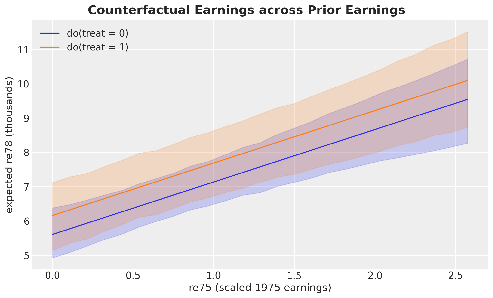
The two curves are parallel, and the constant vertical gap between them is the ATE. This follows from a linear model with no interaction between treatment and covariates. The treatment effect cannot vary with any variable.
This also explains a result that otherwise looks like a bug. A request for a conditional effect returns the ATE.
print(model.comparisons(outcome="re78", variable="treat", conditional={"re75": 1.0}))ATE: treat→re78 mean=0.55 94% HDI=[-0.50, 1.70]PathMC does apply the conditional argument. The model itself has no heterogeneity. A treatment effect that varies by subgroup requires interaction terms in the spec, which the DSL supports with the treat:re75 syntax.
Refutation
A causal estimate should survive attempts to break it. PathMC provides two such tests.
The placebo test permutes the treatment column, which removes any real relationship with the outcome, and then refits the model. A correct pipeline should find no effect.
This is the one place where we change sample_kwargs. The test refits the model once per permutation, so we start from the shared settings and override them for speed: half the draws, two chains, and no progress bar. refute_placebo takes the dictionary as an argument rather than as keyword arguments. It derives its own per-permutation seeds from the top-level random_seed.
%%time
model.refute_placebo(
outcome="re78",
treatment="treat",
n_permutations=4,
random_seed=seed,
sample_kwargs=sample_kwargs | {"progressbar": False},
)NUTS[nutpie]: [beta_re78, beta_treat, sigma_re78]
NUTS[nutpie]: [beta_re78, beta_treat, sigma_re78]
NUTS[nutpie]: [beta_re78, beta_treat, sigma_re78]
NUTS[nutpie]: [beta_re78, beta_treat, sigma_re78]
NUTS[nutpie]: [mu_null, tau_het, z]
Sampling: [theta_new]
CPU times: user 51.6 s, sys: 433 ms, total: 52.1 s
Wall time: 24.5 sPlacebo Refutation: treat → re78 (α = 0.05)
| Placebo test | ✓ Pass — the placebo null straddles zero. |
| Real effect | ⚠ Not distinguishable — the observed effect is consistent with placebo noise. |
| Placebo bias μ_null | 0.0821 [-0.5222, 0.6694] |
| Structural volatility τ_het | 0.3509 |
| Observed ATE | 0.5525 [-0.4968, 1.7020] |
| Calibration | z = 0.612, p_tail = 0.2535 |
| Permutations | 4 |
The output contains two results, and they answer different questions.
The placebo test itself passes. A permuted treatment gives a null effect near zero, so our estimation pipeline does not create signal from noise. That is the property under test, and it holds.
The second result reports that the real ATE does not separate from that placebo null. The ATE’s credible interval already contained zero, and \(P(\text{ATE} > 0) \approx 0.82\), so this is not new information. It is still a useful independent confirmation. A clean pass here would have been the surprising result.
Sensitivity to Unmeasured Confounding
Every result so far depends on an assumption we cannot test: that the seven covariates are all the confounders. If an unmeasured variable \(U\) influences both program participation and earnings, our estimate contains its bias.
Sensitivity analysis converts this untestable question into a quantitative one, following the PathMC sensitivity example. Suppose \(U\) has effect \(\gamma\) on the treatment and \(\delta\) on the outcome. Under a first-order omitted-variable-bias model, the bias is the product \(\gamma \times \delta\), so
\[\text{adjusted ATE} = \text{observed ATE} - \gamma \times \delta\]
The question is now quantitative: how large must \(\gamma \times \delta\) be to change our conclusion?
sensitivity = model.sensitivity(outcome="re78", treatment="treat")
sensitivity| Observed ATE | 0.5525 [-0.4968, 1.7020] (94% HDI) |
| Tipping point | γ × δ = 0.5525 |
| Symmetric example | γ = 0.7433, δ = 0.7433 would nullify the effect |
The tipping point equals the observed ATE, and it always does. Under this bias model, the product that reduces the adjusted ATE to zero is the observed ATE by definition. The number is therefore a restatement, not a new result. What matters is the meaning of that magnitude in context, which the contour plot and the calibration below provide.
fig, ax = plt.subplots(figsize=(10, 6))
sensitivity.plot(ax=ax)
fig.suptitle(
"Sensitivity to Unmeasured Confounding", fontsize=18, fontweight="bold", y=1.05
);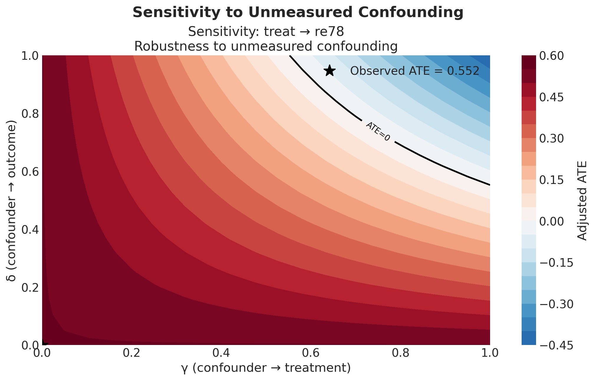
How to read this plot
Every point in the square is one hypothetical confounder \(U\). The bias model describes it with two numbers only.
- The x-axis, \(\gamma\), is the effect of \(U\) on program participation. It is a coefficient in the treatment equation, so it is on the logit scale.
- The y-axis, \(\delta\), is the effect of \(U\) on 1978 earnings. It is a coefficient in the outcome equation, so it is in thousands of dollars.
- The color is the ATE we would report after we remove that confounder’s bias, \(\text{observed ATE} - \gamma \times \delta\). The palette is centered on zero. Red keeps the effect positive. Blue changes its sign.
- The black star at the origin is the case we reported: \(\gamma = \delta = 0\), which means no unmeasured confounder.
- The black contour is the tipping line, where the adjusted ATE reaches zero. It is the curve \(\gamma \times \delta = 0.552\).
Two features of that curve follow from the bias model, not from this dataset.
The curve never touches either axis. A confounder that affects participation but not earnings produces no bias, however strong it is. The same holds in the other direction. Bias needs both effects. This is why the statement “there must be variables that predict who signs up” is not by itself an argument against the estimate.
The curve bends toward the far corner. The two effects combine multiplicatively, so a confounder with a very strong effect on one variable needs only a small effect on the other to reach the line.
What the plot shows for this example
Move away from the star toward the top-right corner. Most of the square is red, and the field turns blue only in that corner. At first sight this looks reassuring.
It is not reassuring, because the axis limits are a choice. PathMC’s default grid stops at \(1.0\) on both axes. Several covariates we did measure, in this same model, have coefficients larger than that. The square is too small to contain the confounders this dataset produces. We redraw it on a wider scale below.
The plot has one more limitation. The color is the posterior mean adjusted ATE and nothing else. It shows no uncertainty, and our ATE posterior already contained zero before we added any confounder. The result object does carry prob_sign_change, which accounts for that width, but plot() does not use it. This plot therefore understates how easily the conclusion changes.
The symmetric confounder
To judge whether that boundary is close or far, one number is easier to use than a curve. We take the point where the tipping curve crosses the \(45\) degree line. At that point the confounder has an equal effect on the treatment and on the outcome. Set \(\gamma = \delta\) in \(\gamma \times \delta = T\) and you get
\[\gamma = \delta = \sqrt{T}\]
symmetric_strength = np.sqrt(sensitivity.tipping_point)
print(f"Tipping point (gamma x delta): {sensitivity.tipping_point:.3f}")
print(f"Symmetric confounder strength: {symmetric_strength:.3f}")
print(f" implied odds ratio on treat: {np.exp(symmetric_strength):.2f}")
print(f" implied effect on re78: {1_000 * symmetric_strength:,.0f} dollars")Tipping point (gamma x delta): 0.552
Symmetric confounder strength: 0.743
implied odds ratio on treat: 2.10
implied effect on re78: 743 dollarsWhy the symmetric point matters
This point has two properties, and they select the same point on the tipping curve. It is the point closest to the origin. It is also the point where the larger of the two effects is smallest. Both properties state that a confounder needs the least total strength when its two effects are equal.
Stated in reverse, this gives a rule we can use:
Any confounder with \(|\gamma| < 0.743\) and \(|\delta| < 0.743\) cannot overturn this estimate. No pair of effects that are both smaller than \(0.743\) multiplies up to \(0.552\).
One threshold checks both effects at once, which makes \(\sqrt{T}\) a more useful summary than \(T\) itself.
It also converts into quantities a domain expert can evaluate, which \(T = 0.552\) does not.
- For the effect on the treatment, \(\gamma = 0.743\) on the logit scale is an odds ratio of about \(2.1\). The confounder would about double a person’s odds of joining the program.
- For the effect on the outcome, \(\delta = 0.743\) is about \(743\) dollars of 1978 earnings.
Neither value is unusual for this dataset.
The rule works in one direction only. It can prove that a confounder is too weak to matter. It cannot prove that a confounder is strong enough to matter. An unbalanced confounder can be far past the tipping line with one of its two effects well below \(0.743\), because the other effect is large. The full curve gives the complete answer, not the single number. The plot below shows both.
We can go further than that summary number. Every covariate in the model already has a \(\gamma\) (its estimated effect on treatment) and a \(\delta\) (its estimated effect on earnings). For each covariate we compute the confounding product it would have produced if we had not measured it, then compare that product against the tipping point.
posterior = idata["posterior"]
gamma = posterior["beta_treat"].mean(dim=("chain", "draw")).to_pandas()
delta = posterior["beta_re78"].mean(dim=("chain", "draw")).to_pandas()
calibration = pd.DataFrame(
{
"gamma_on_treat": gamma[covariates_names],
"delta_on_re78": delta[covariates_names],
}
)
calibration["abs_gamma_x_delta"] = (
calibration["gamma_on_treat"] * calibration["delta_on_re78"]
).abs()
calibration["exceeds_tipping_point"] = (
calibration["abs_gamma_x_delta"] > sensitivity.tipping_point
)
calibration = calibration.sort_values("abs_gamma_x_delta", ascending=False)
calibration.round(3)| gamma_on_treat | delta_on_re78 | abs_gamma_x_delta | exceeds_tipping_point | |
|---|---|---|---|---|
| black | 2.909 | -0.937 | 2.725 | True |
| married | -0.868 | 0.777 | 0.674 | True |
| education | 0.347 | 1.143 | 0.397 | False |
| hispanic | 0.692 | 0.233 | 0.161 | False |
| nodegree | 0.700 | -0.134 | 0.094 | False |
| re75 | -0.048 | 1.531 | 0.074 | False |
| age | 0.074 | 0.513 | 0.038 | False |
The table is easier to read as a plot, with the tipping point drawn as a reference line.
fig, ax = plt.subplots()
ascending = calibration.iloc[::-1]
bar_colors = ["C3" if flag else "C2" for flag in ascending["exceeds_tipping_point"]]
ax.barh(ascending.index, ascending["abs_gamma_x_delta"], color=bar_colors, alpha=0.8)
ax.axvline(
sensitivity.tipping_point,
color="black",
linestyle="--",
label=f"tipping point = {sensitivity.tipping_point:.3f}",
)
for name, value in ascending["abs_gamma_x_delta"].items():
ax.text(value, name, f" {value:.2f}", va="center", fontsize=11)
ax.legend(loc="lower right")
ax.set(
xlabel=r"$|\gamma \times \delta|$ (bias that omitting it would cause, thousands)",
ylabel="covariate omitted",
xlim=(0, 1.08 * ascending["abs_gamma_x_delta"].max()),
)
fig.suptitle(
"Bias Each Measured Covariate Would Have Caused", fontsize=18, fontweight="bold"
);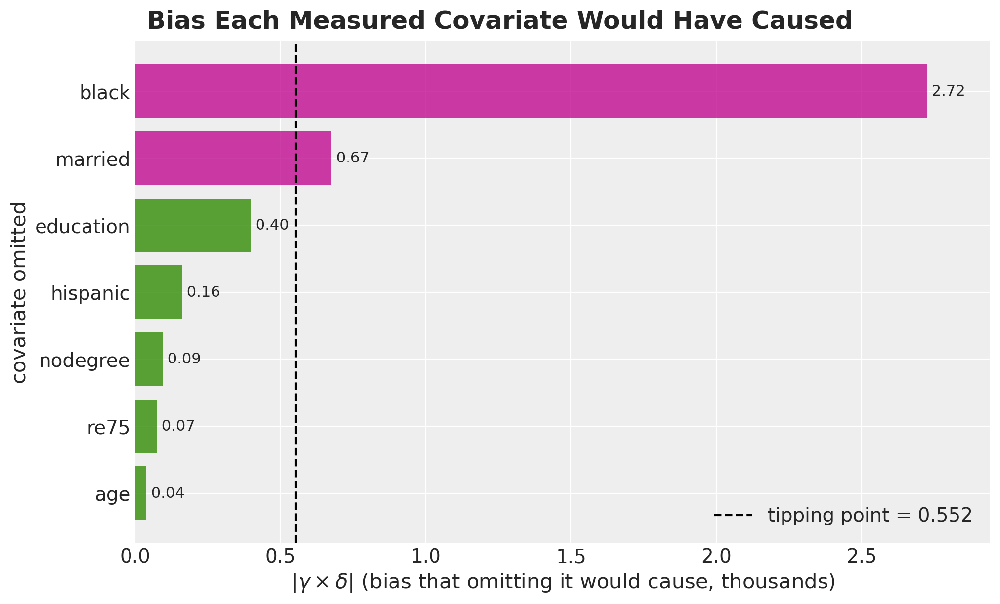
This is the answer to “how strong is strong”. The dashed line is the whole estimated effect. Two of the seven covariates exceed it on their own, and black exceeds it by about five times. A third covariate, education, comes close to it. The remaining four are clearly below the line.
We can also place the same seven covariates directly on the sensitivity surface. That plot shows how each covariate passes the line, not only that it does. We widen the grid so that every covariate stays inside the axes.
sensitivity_wide = model.sensitivity(
outcome="re78",
treatment="treat",
gamma_range=(0.0, 3.2),
delta_range=(0.0, 1.8),
n_grid=200,
)
fig, ax = plt.subplots(figsize=(11, 7))
sensitivity_wide.plot(ax=ax)
ax.scatter(
calibration["gamma_on_treat"].abs(),
calibration["delta_on_re78"].abs(),
color="black",
s=70,
zorder=6,
label="measured covariate",
)
for name, row in calibration.iterrows():
ax.annotate(
name,
(abs(row["gamma_on_treat"]), abs(row["delta_on_re78"])),
textcoords="offset points",
xytext=(8, 8),
fontsize=11,
fontweight="bold",
)
ax.plot(
symmetric_strength,
symmetric_strength,
"D",
color="C2",
markersize=11,
zorder=6,
label=f"symmetric confounder ({symmetric_strength:.2f}, {symmetric_strength:.2f})",
)
ax.add_patch(
Rectangle(
(0, 0),
symmetric_strength,
symmetric_strength,
facecolor="none",
edgecolor="C2",
linestyle="dotted",
linewidth=2,
zorder=5,
label="provably safe box",
)
)
ax.add_patch(
Rectangle(
(0, 0),
1.0,
1.0,
facecolor="none",
edgecolor="black",
linestyle="dashed",
linewidth=1.5,
zorder=5,
label="extent of the default view",
)
)
ax.legend(loc="upper right")
ax.set_title("")
fig.suptitle(
"Measured Covariates on the Sensitivity Surface", fontsize=18, fontweight="bold"
);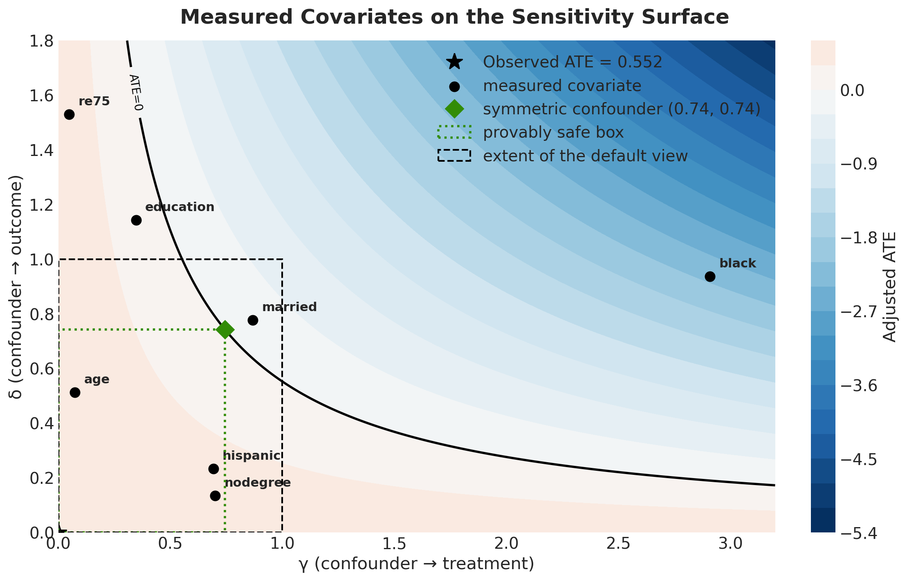
This is the same surface as before, on a grid wide enough for the real coefficients. Each measured covariate is placed at the confounding strength it has. Read a black dot as: if we had not recorded this variable, our unmeasured confounder would be here.
The dashed black square in the bottom-left corner is the extent of the previous figure. Three of the seven covariates are outside it, and black is three times wider than the square. The first plot looked reassuring mainly because its axes were too short.
Two covariates are past the tipping line, in the blue region where the adjusted effect changes sign, and they reach it in different ways. black has a very large effect on participation and a moderate effect on earnings. married has a moderate effect on both. education is close to the line: its effect on earnings is strong and its effect on participation is weak, so its product stays just inside the line.
The dotted green box shows the safe region from the symmetric confounder, with the diamond at its corner. No point inside the box can overturn the estimate. Only age, hispanic and nodegree are inside it.
The box also shows why the rule works in one direction only. re75 and education are both outside the box, above the green line on the vertical axis, and both are still on the red side of the tipping curve. A point outside the box is not necessarily dangerous. A point inside the box is always safe.
So the answer to “how strong is strong” is not reassuring. A confounder of the kind this dataset contains, of the same size as variables we did record, is enough to remove the estimated effect.
One caveat applies to the table. \(\gamma\) is on the logit scale of the treatment equation, while \(\delta\) is in thousands of dollars. The bias model also assumes a unit-variance confounder that acts linearly on both variables. The products are therefore an approximate guide to magnitude, not an exact bias decomposition. The qualitative conclusion still holds.
So the estimate is fragile. This does not mean the effect is zero. It means the causal claim depends heavily on having measured the right variables. A single unobserved variable of a kind this data already contains would be enough to remove the effect. This is the third independent result with the same conclusion, together with the credible interval and the placebo refutation.
Conclusion
We set out to rebuild a hand-rolled PyMC structural causal model in PathMC and check that the answers matched. They matched to machine precision, and the coefficient posterior agreed with the previous post to within Monte Carlo error.
What the DSL gave us
The model went from about forty lines of PyMC to two lines of spec. The larger gain is what came after: backdoor adjustment sets read from the graph, implied conditional independences enumerated and tested, DAG falsification, placebo refutation, marginal effects and elasticities, and a sensitivity analysis. Each of these would have been a separate task in the hand-rolled version. Here each one was a single method call.
The comparison between the structural model and the plain adjustment regression was also useful. The two agreed, as the backdoor criterion requires. Modeling more of the data-generating process does not automatically improve the estimate of one effect.
What we learned about the data
The results are not encouraging. The estimated effect of the training program on 1978 earnings is positive in expectation, at about \(0.55\) thousand dollars, with \(P(\text{ATE} > 0) \approx 0.82\) and a credible interval that contains zero. The placebo refutation could not distinguish the effect from a null effect. The sensitivity analysis showed that an unmeasured confounder no stronger than several covariates we already measured would be enough to overturn it.
None of this says the program did not work. It says that this dataset, under this model, cannot tell us with confidence that it did.